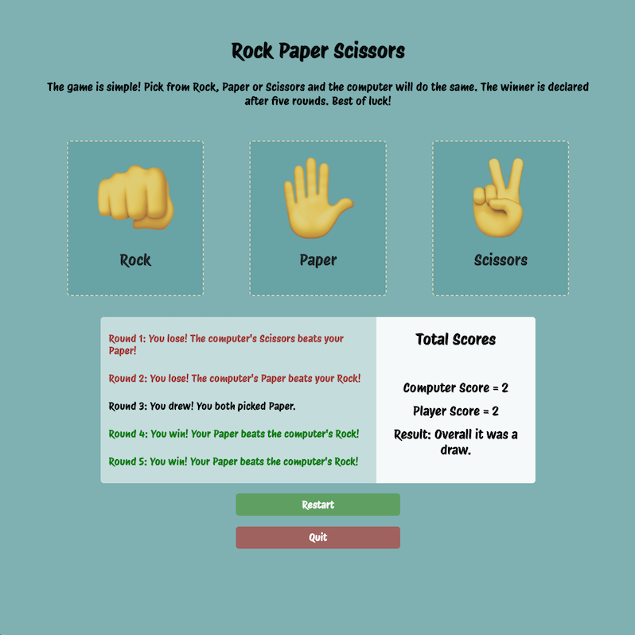
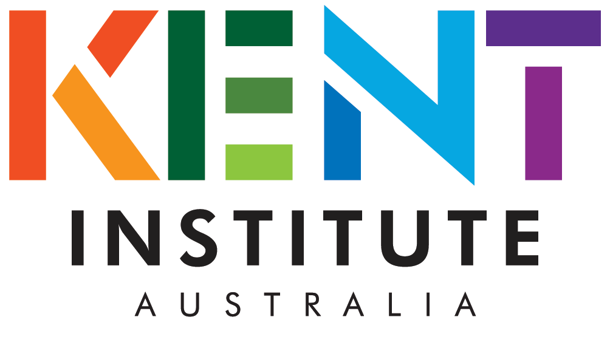
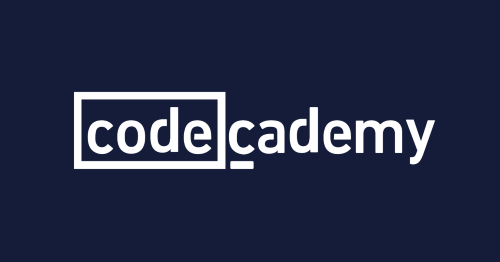
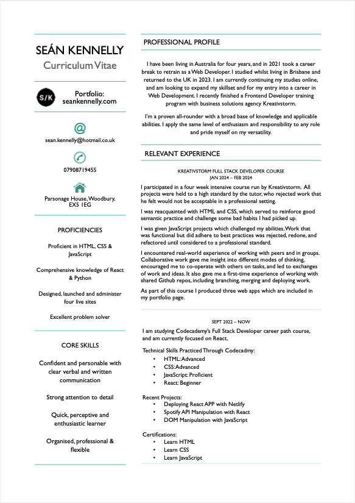

Projects

Relevant Experience
Design & Build
- Designed four active sites
- Built five active sites
- Used Bootstrap for responsive design
Working With Clients
- Met with clients to discuss project objectives, client needs and project scopes
- Provided clients with designs and documentation
- Completed projects to the satisfaction of clients
- Invoiced clients and provided them with website analytics
Administration
- Management of hosting on behalf of clients
- Use of FTP to upload and manage site files
- Purchasing of Domains on behalf of clients
- Purchasing and application of SSL certificates
- Currently administer seven active sites
Courses

Sydney, Australia
Full time vocational course that covered many diverse aspects of Web and Software Development, including (but not limited to):
- Coding languages (HTML, CSS, JavaScript, Python, PHP, SQL)
- Real-world projects including websites, databases and hosting
- Development of UI and UX
- Application of SEO
- Client-based approaches to projects

Through Codecademy I have completed the following courses:
- Learn HTML
- Learn CSS
- Learn JavaScript
I am currently working on the Full Stack Engineer career path course.
Kreativestorm
Some quick example text to build on the card title and make up the bulk of the card's content.
Sydney, Australia
Full time vocational course that covered many diverse aspects of Web and Software Development, including (but not limited to):
- Coding languages (HTML, CSS, JavaScript, Python, PHP, SQL)
- Real-world projects including websites, databases and hosting
- Development of UI and UX
- Application of SEO
- Client-based approaches to projects
Through Codecademy I have completed the following courses:
- Learn HTML
- Learn CSS
- Learn JavaScript
I am currently working on the Full Stack Engineer career path course.
Kreativestorm
Some quick example text to build on the card title and make up the bulk of the card's content.
Curriculum Vitae
